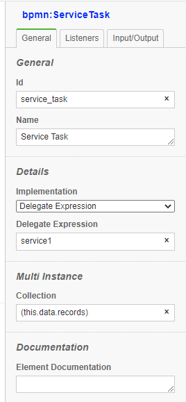
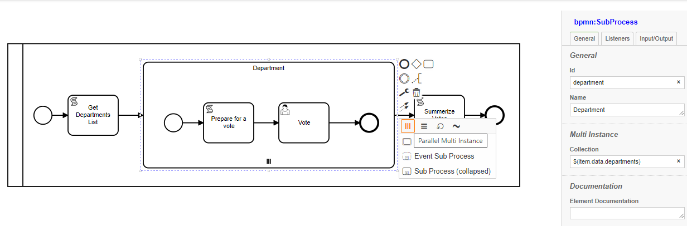
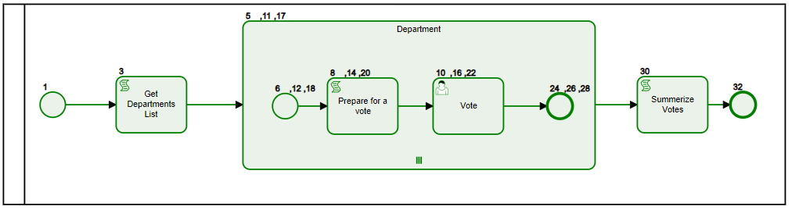

Multi-instance Tasks (loops):#

<bpmn:scriptTask id="scriptTask" name="Script Task">
<bpmn:incoming>Flow_159xzcz</bpmn:incoming>
<bpmn:outgoing>Flow_0t7z2os</bpmn:outgoing>
<bpmn:multiInstanceLoopCharacteristics isSequential="true"
camunda:collection="$(data.records)" />
<bpmn:script><![CDATA[this.log('testing from the inside: '+data.loopKey);]]></bpmn:script>
</bpmn:scriptTask>
Any Task can have multi-instance either Sequential or Parrallel
Loops have a unique data structure to support multiple items for same node with each of unique data
We will use an example to illustrate the use of loops:
- We would like to conduct a poll on various departments about new projects coming up
- We will retrieve department list from a DB using Get Department List service task
- For each department will initiate a subProcess department with a multi-instance
Defining loop collection#
- Input Collection is defined as an Array, defines the multipicity of the node.
- Each value in the collection becomes a key to item

- Since we like to have various departments vote at any time, we make the multi-instance
parallel - Inside the subprocess instance will assign users and designate more information about the vote in
Prepare for a vote - A User Task
voteto allow desigated users/user groups to vote with some input fields - After all department complete their vote, another task
Summarize Voteswill process the results

Data structure#
- Each loop instance stores its own unique data elements, for subProcess loops data is shared among all node items inside the subprocess
So the data structure looks like:
Loop name
Key
data
Any node inside the loop will share same data, so inside 'HR' Will produce:department: { IT: { scriptLog: 'added by script event,key:IT', votedBy: 'IT-User', vote: 85 }, HR: { scriptLog: 'added by script event,key:HR', votedBy: 'HR-User', vote: 100 }, Billing: { scriptLog: 'added by script event,key:Billing', votedBy: 'Billing-User', vote: 80 } }100 for HR.
However, Summarize Votes task is outside the subprocess and at the root, so it has the instance data structure
So once you have access to instance data:
Object.keys(item.data.department).forEach(key=>{
console.log('Vote for:',key,item.data.department[key]['vote']);
});
Data Search#
-
During the execution, either through an event or a script/service task
-
In a detached fashion, like a batch job or remote access
In Addition,let items=await api.data.findItems({"items.elementId":'Activity_vote',"data.caseId":1050}); items.forEach(voteItem=>{ let vote =voteItem['data']['vote']; let dept=voteItem.itemKey; console.log("vote Item",voteItem.seq,'dept:',dept,'vote',vote); });item.itemKeyis populated with the key value to facilitate data search: -
Search for a particular item by key: